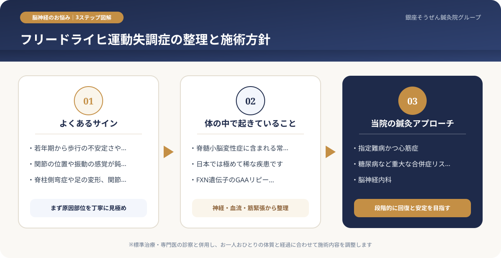
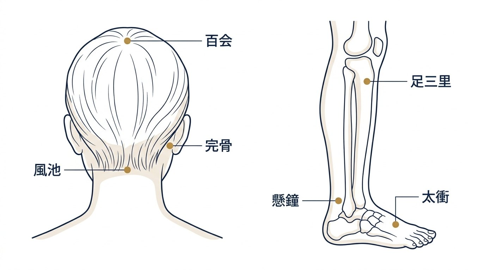

フリードライヒ運動失調症の鍼灸
遺伝性の脊髄小脳変性症に対し、脳神経内科・循環器内科管理を最優先とし主治医許可下で筋疲労緩和と循環ケアを支援します。
まず知っておきたい要点と改善の流れ

脊髄小脳変性症に含まれる常染色体劣性遺伝の指定難病で、日本では極めて稀な疾患です。FXN遺伝子のGAAリピート異常増幅によりフラタキシン蛋白が不足し、細胞内ミトコンドリアの機能障害が起こることで小脳・脊髄後索・末梢神経だけでなく心筋や膵β細胞にも障害が及びます。5〜15歳頃の発症が多く、運動失調・深部感覚喪失・側弯症に加え、約3分の2に心筋症や不整脈を合併します。
このようなお悩みはありませんか？
- ✓若年期から歩行の不安定さや、つま先の屈曲・足の内反がある
- ✓関節の位置や振動の感覚が鈍く、下肢を中心に筋力が低下している
- ✓脊柱側弯症や足の変形、関節の硬さ、構音・視力・聴力の変化がある
- ✓心筋症や不整脈、糖尿病などの合併症を指摘されている
当院の施術アプローチ・改善の流れ
なぜ鍼灸で改善へ向かうのか？（作用機序の図解）
フリードライヒ運動失調症に対する鍼灸は、脳循環・三叉神経血管系と神経可塑性の調整機序を通じて、お体本来の回復力を引き出します。

百会・風池・合谷などの経穴刺激が三叉神経や大後頭神経・体性感覚路へ穏やかに作用します。
脳幹の自律神経中枢やセロトニン・GABA系のバランスを整え、神経の過敏発火を鎮めます。
後頭下筋群や首深部のこわばりを解き、頭部・内耳・顔面周囲の血流環境をサポートします。
神経回路の再学習（可塑性）と睡眠の質を高め、専門医の治療やリハビリの土台を支えます。
院長YouTube解説・関連動画
フリードライヒ運動失調症の症状は運動失調症状と末梢神経障害
フリードライヒ運動失調症の主な症状は、ふらつきなどの運動失調症状と手足の感覚の異常などの末梢神経障害です。
フリードライヒ運動失調症を発症すると、まず歩きにくさが起こります。その後運動機能の障害が進み、車椅子での生活になることも多いです。
症状が進むと構音障害や眼球運動障害、心臓の障害などが現れます。場合によっては不整脈などの症状が現れ、命に危険が及ぶこともあります。
側湾症が起こるなど体の変形が起こったり、合併症として糖尿病を起こしたりすることもあります。
・運動失調
フリードライヒ運動失調症の1番顕著な症状です。運動失調は小脳や脊髄の後索が損傷することで発生します。歩行や手足の動きが不安定になります。
多くの人は初期症状として歩行障害が起こります。歩行が不安定になってくると足を広げてバランスを取るようになり、進行すると階段の上り下りや日常的な歩行が困難になり、最終的には車椅子が必要になることがあります。
だんだんと手や足の動きが滑らかでなくなり、細かい動作が難しくなります。特に細かい作業に影響が出るようになります。日常生活ではボタンを留めたり字を書いたり食事をしたりすることが難しくなってきます。立ち上がる時などにバランスを保つことが難しくなり、転倒のリスクも高まります。
・深部感覚の喪失
フリードライヒ運動失調症では、脊髄の後索が損傷されるため、自分の手足の位置を正確に把握する能力が低下します。自分の手足がどこにあるのかを感じることが難しくなり、物を掴む時には目で確認しながら行うようになります。
動作もぎこちなくなります。目を閉じた状態ではさらに不安定になることがあります。振動を感じる能力も低下し、足や手に置いた物の動きがわかりにくくなります。
・筋力低下
筋力低下は、特に下肢で顕著に現れます。神経細胞へのダメージが筋肉に伝わり、筋力が失われていきます。歩行や階段の上り下りが難しくなります。症状が進むと車椅子が必要になります。手や腕の力も徐々に弱まり下肢だけでなく上肢にも症状が現れます。物を持ち上げたり手を伸ばしたりすることが難しくなります。さらに、小さな動作でも異常に疲労感を感じるようになります。
・骨格の異常
多くの場合、骨格の異常がみられます。これらの異常は、神経障害に伴う筋肉の不均衡や発育の遅れによるものとされています。主に、脊柱側弯症、足の変形、関節硬直などがみられます。
・心臓の異常
約３分の2の人に心臓疾患の合併が見られます。フラタキシンの欠乏が心筋細胞に影響を与え、さまざまな心臓の問題を引き起こします。心筋症や不整脈、心不全が現れます。
・糖尿病
一部の人はフラタキシンが欠乏することで膵臓のβ細胞が損傷されインスリン分泌が低下し糖尿病が現れます。
・聴覚、視覚、言語障害
聴力が障害では特に高音域の音が聞き取りにくくなる場合があります。視覚障害は視神経の萎縮によって起こります。
フリードライヒ運動失調症の根本的な改善方法はありません。
主に症状として現れる運動機能の障害に対して、障害の進むスピードを遅らせることや運動機能を改善したり保ったりすることを目的として改善を行います。方法としては、セレジストの内服やリハビリテーションです。
不整脈や心不全が起こることもあり、死につながる危険も十分にあるため注意が必要です。
・リハビリテーション
筋力やバランスを維持するための運動が推奨されます。特に初期段階では、転倒リスクを減らすためのバランストレーニングが有効です。車椅子や歩行器、足装具などが運動機能の低下に対応するために補助具を使うこともあります。
・心臓の管理
βブロッカーやACE阻害薬、抗不整脈薬などを使って改善を行うことがあります。
・骨格のサポートと管理
症状が軽度の場合は装具を使って進行を抑えることがあります。重度の場合は手術が必要になることがあります。
・栄養とサプリメント
ビタミンE、ビタミンC、コエンザイムQ10などの抗酸化物質がミトコンドリアの健康をサポートするために使用されます。低栄養や体重減少を防ぐため、栄養士の指導のもとで食事の調整も行います。
・アイデベノン
ミトコンドリアのエネルギー代謝をサポートする薬で、心筋症の進行を抑えるために使用されます。一部の研究では、運動機能の改善にも効果が期待されています。
・ オメガ-3脂肪酸
一般的にサプリメントとして利用されることが多いですが、抗炎症作用と神経保護効果があるため改善に使われることもあります。心臓や神経系の保護や炎症による症状の悪化を抑える効果があります。
・ミトコンドリア機能を補助する薬
RT001という臨床試験中の新薬があります。これはミトコンドリアの酸化ストレスを軽減するために開発されています。
・試験中の遺伝子の薬
現在、FXN遺伝子の異常を修正するための遺伝子の改善方法の開発が進んでいます。
フリードライヒ運動障害の可能性がある場合、神経伝導を調べたりMRIや血液、遺伝子などを調べて判断します。
性別の差はなく、男女ともに同じくらいの割合で発症する可能性があります。一般的には5歳から15歳の年齢で発症することが多いですが、18ヶ月から30歳代で発症することもあります。
初めに不随意のつま先の屈曲や足の内反によって歩きにくさを感じることが多いため、違和感を感じた時にすぐに病院に行くことをおすすめします。
平衡障害・ふらつき・小脳系トラブルの全身ツボ図解
実際の施術ではお一人おひとりの体質・症状に合わせて選穴しますが、脊髄小脳変性症・歩行平衡障害などのバランス・下肢支持サポートの臨床でよく用いられる代表的なツボの目安です。

📌 代表的なツボの詳細一覧表を開く（6穴） ▼
| ツボ名 | 位置の目安 | 主な狙い | セルフケアの注意点 |
|---|---|---|---|
| 百会（ひゃくえ） | 頭頂部の中央 | 体幹の軸感覚・自律神経の安定化 | 座位で転倒に注意しながら優しく触れます。 |
| 完骨（かんこつ） | 耳の後ろにある出っ張った骨（乳様突起）の下後ろ | 平衡感覚・後頭部深層筋の緊張緩和 | 親指で優しく支える程度に押します。 |
| 風池（ふうち） | 後頭部生え際のくぼみ | 椎骨脳底動脈周囲の筋緊張緩和・ふらつきケア | 首を大きく反らさず穏やかに刺激します。 |
| 足三里（あしさんり） | 膝のお皿の下外側から指4本分下 | 下肢の筋疲労回復・歩行リハビリの土台づくり | 温灸や穏やかな指圧で下肢の循環を促します。 |
| 懸鐘（けんしょう） | 外くるぶしの上から指4本分上 | 足首の安定性・下肢の重だるさ軽減 | 無理な立位を避け座位でケアします。 |
| 太衝（たいしょう） | 足の甲、親指と人差し指の骨の間 | 足底接地感の意識づけ・自律神経の鎮静 | お風呂上がりなどに優しくさすります。 |
国際査読論文の科学的エビデンス
国際的な医学データベース（PubMed・Cochrane等）で報告されている脊髄小脳変性症・歩行平衡障害などのバランス・下肢支持サポート領域の代表的な査読済み鍼灸研究をまとめています（標準治療との併用や研究上の限界を含めて正確に掲載）。
📚 査読論文データ・PubMed出典リンクを開く（4件） ▼
| 年・研究デザイン | 対象・規模 | 主な結果 | 限界・出典 |
|---|---|---|---|
| 2016年 Cochraneレビュー | 反復性片頭痛 22 RCTs（n=4,985） | 無治療比で頻度半減41% vs 17%（RR 2.40）、予防薬比3か月57% vs 46%（RR 1.24）かつ副作用脱落OR 0.27と優位。 | 1年以上の長期検証は不足。 Cochrane (PMID: 27351677) |
| 2016年 Cochraneレビュー | 脳卒中後リハ 31 RCTs（n=2,257） | 通常リハ併用でBarthel Index（MD 9.19）・Fugl-Meyer（MD 6.16）・嚥下・疼痛改善を示唆、重篤な有害事象なし。 | GRADE低〜非常に低。標準リハビリの補完として位置づけ。 Cochrane (PMID: 27562656) |
| 2024年 シャム対照RCT | パーキンソン病の睡眠障害 78名解析 | 抗PD薬併用下でPDSS睡眠尺度が4週時+19.75点・8週時+20.24点とシャム比有意改善（P<0.001）。 | 単施設・小規模・8週間追跡。標準薬併用が前提。 JAMA Netw Open (PMID: 38922617) |
| 2013年 多施設RCT | ベル麻痺（顔面神経麻痺）338名（ステロイド併用） | 6か月時の顔面神経機能回復は得気手技群が対照鍼群より優位（調整OR 4.16）、QOLも改善。 | 全例プレドニゾン併用。急性期の過剰顔面通電は回避配慮。 CMAJ (PMID: 23439629) |
参考文献・出典
- 2016年 Cochraneレビュー（反復性片頭痛 22 RCTs（n=4,985））— Cochrane (PMID: 27351677)
- 2016年 Cochraneレビュー（脳卒中後リハ 31 RCTs（n=2,257））— Cochrane (PMID: 27562656)
- 2024年 シャム対照RCT（パーキンソン病の睡眠障害 78名解析）— JAMA Netw Open (PMID: 38922617)
- 2013年 多施設RCT（ベル麻痺（顔面神経麻痺）338名（ステロイド併用））— CMAJ (PMID: 23439629)
よくある質問（FAQ）
Q. 心筋症や不整脈の合併があっても施術できますか？▼
Q. 脊柱側弯や足の変形を鍼灸で元に戻せますか？▼
あわせて読まれる関連疾患（脳神経のお悩み）
脈打つ強い痛みや光・音への過敏を伴う片頭痛に対し、首肩の深層筋と自律神経を整えて発作頻度と負担の軽減を目指します。
頭を動かした瞬間の回転性めまいに対し、首肩の緊張緩和と内耳循環・自律神経調整、寝返り運動で再発予防を支援します。
末梢性顔面神経麻痺に対し、早期の医療機関受診を最優先としたうえで、顔面の血流促進と後遺症予防を支援します。
指定難病である脊髄小脳変性症に対し、脳神経内科治療を最優先しつつ安定期の頭皮鍼や筋緊張緩和でQOL維持を支援します。
指定難病である多系統萎縮症に対し、脳神経内科の標準治療を最優先としたうえで、安定期の循環・筋緊張・QOL維持を支援します。
中枢神経の髄鞘が障害される自己免疫性の指定難病。脳神経内科での再発予防を最優先に、安定期の体調管理と補完ケアを支えます。
CLINICAL RECOVERY CASES
✨ 実際の臨床改善事例・回復経過を見る
銀座本院をはじめ各院での実際の改善事例を症状別に絞り込んでご確認いただけます。
おひとりで悩まず、まずはご相談ください
銀座本院・川口・大宮・横浜・博多・田無の各院でご予約を承っております。